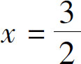

为什么代数式化简要越来越简单，而多项式展开过程反而越来越复杂了呢？这里面有三个原因：
第一，当我们遇到一个具体问题的时候，表面上复杂的算式，有可能反而是简单的．比如53×47，这个算式就是两数相乘看似很简单，可是如果让我们口算，很难一下子找到答案．但如果我们把它化成（50＋3）×（50－3），马上就可以看出来，它符合平方差公式，结果等于50的平方减去3的平方，虽然50的平方减去3的平方需要三次运算，但是我们却能很快口算出来：50的平方是2500，3的平方是9，两者相减得到2491．但是我们还得回过头来想一想，为什么展开后的三次运算，反而比一次运算更简单呢？是因为数变小了吗？不对！其实是因为我们没弄明白，原来的53×47，在实际运算的时候，是要按照（50＋3）×（40＋7）来展开计算的，这个算式一展开，那就是四个乘法加三个加法，一共是七个步骤，正因为我们借助了平方差公式，才把七个步骤简化为了三个．这就是我们要说的第一点，如果只看公式，表面上确实费事了，但遇到实际问题的时候，还得具体问题具体分析．
第二，既然把公式展开会变得复杂，那就证明我们也可以把一个复杂的多项式转换为简单的平方式．我们学这个多项式的目的之一是解二次方程，比如有这么一个方程：4x 2 ＋9＝12x ，面对这样的方程式，很难发现x 的值等于多少，但是，如果我们把12x 挪到方程的左边来就会发现，该方程完全符合完全平方公式：4x 2 ＝（2x ）2 ，9＝32 ，－12x ＝－2×2x ×3．这三项正好凑齐了一个完全平方公式，因此，原式可以转化为（2x －3）2 ＝0，一个算式的平方等于0，只能证明这个算式本身等于0，即2x －3＝0，因此解得

．但如果我们不懂得完全平方公式，就无法解出这个方程．第三，我们现在学的是多项式的乘法，将来还要学多项式的除法．如果把两个数相除，要想化简分数，就必须把被除数分解为几个数的乘积．数字是这样，多项式也是这样，当我们处理多项式除法的时候，面对的就是一组多项式除以另一组多项式了．这也就意味着，我们必须把多项式转换成几个算式的乘积，但面对复杂的多项式，我们怎么能够完成这一步转换呢？很多情况下，就只能凭借我们之前学的几组公式来处理．说到这里，我们就算进入了本章的主题．
在数学中，相乘的两个变量叫作因子，相乘的两个算式就叫作因式，所以我们就把一个多项式拆成几个因式的乘积的过程叫作因式分解．我们刚才提到的二元一次方程问题和分式化简的问题，都要依靠因式分解来解决．听到这儿你可能会说了，我们好不容易学会把几个因式给展开了，现在又让我把展开以后的多项式给变回去，这变来变去的，不是瞎折腾吗？你还真说到点子上了，的确有好多同学在学到因式分解以后，就找不到方向了，一会儿把这个式子乘进去，一会儿又把它分解出来，折腾几圈下来，就把自己绕晕了．其实，我们学多项式展开的最主要的一个目的，就是学因式分解．那你说，我们为什么要把一个多项式变成几个相乘的因式呢？有两方面的原因：
第一，可以简化计算．这个道理刚才咱们说过了，把一个多项式变成因式的乘积以后计算的次数会变少．第二，可以增加信息量．什么叫增加信息量呢？我们通过一个例子解释一下：同样是两个算式，一个是两个变量相加等于0，一个是两个变量相乘等于0，哪个算式给我们的信息多呢？我们要仔细分析一下，这两个算式有什么区别：第一个算式，我们只能知道这两个数字互为相反数，其他信息一概不知；但是第二个算式却可以告诉我们，这两数当中至少有一个数是0．除此之外因式还能带给我们更多信息，我们以后还会讨论．
通过以上描述我们不难发现，因式分解是多项式乘法，是互为逆运算的．然而它们的难度差别却非常大：多项式的乘法非常简单，无论这两个多项式多长，无论有没有公式帮忙，只需要把相乘的几个算式逐项展开，相乘后再相加，总是能够得到正确的结果．但是，当我们面对一个很长的多项式的时候，却很难判断它到底是哪几个因式的乘积．其实这也不奇怪，我们要是对比一下之前学过的算法就会知道，无论是减法、除法还是开方，凡是逆运算都要比加法、乘法和乘方复杂得多．以除法为例：当我们拿着两个数字相除的时候，实际上是在一次次试错，而且要试很多次才能得到正确答案．这又是为什么呢？按说，这个逆运算不就是把正向的运算反过来吗？它应该跟这个正向运算的难度一样啊？比如我们往东走两步，那么逆运算不就是往西走两步吗？这能有什么本质区别呢？
如果你仔细观察生活就会发现，并不是所有的动作都是可逆的．比如：你只需要轻轻一扯就能把一张纸撕破；但如果你想把撕开的纸再重新粘好，就比撕开它困难很多．再比如，我们把一块糖扔到水里，用勺子一搅拌，糖块很容易就溶解到水里了；但是如果让你把这个勺子反过来转动两下，还能把已经溶解在水里的糖变成一个糖块吗？与此类似的还有：一个人要想不好好学习，沾染一个不良嗜好，往往非常容易；但是你要想戒除这个不良嗜好，重新取得好的学习成绩，那可就太困难了．虽然撕开的纸是可以粘好的，糖也能够从糖水里取出来的，学习差的人也能重新变好，但是这些过程却要困难得多．同理，因式分解的过程也是一样．我们要把一个多项式重新拆成几个算式的乘积，那得学会“相面”的本事！